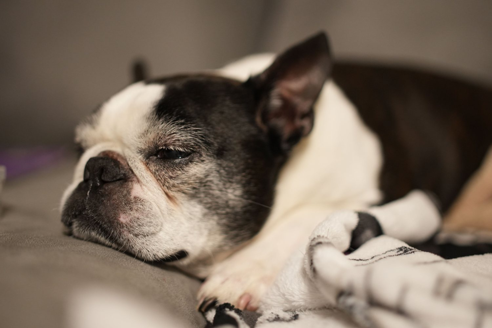
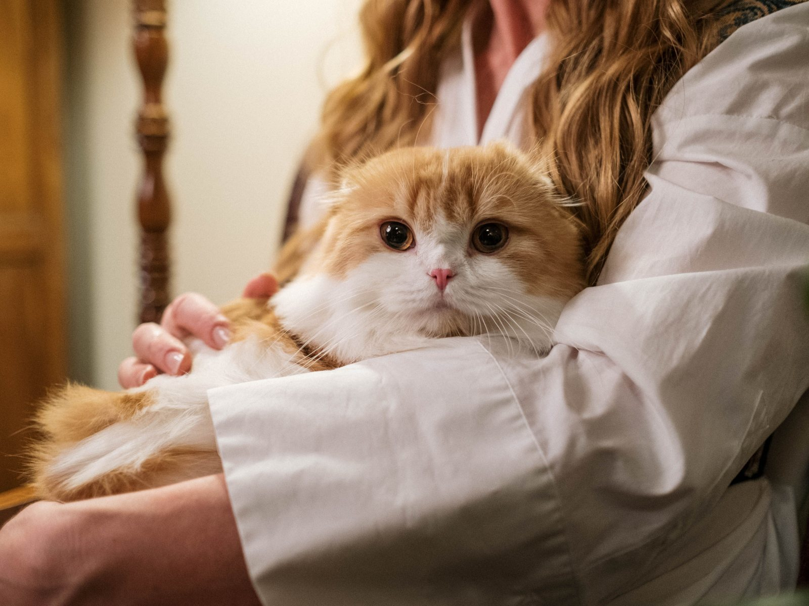
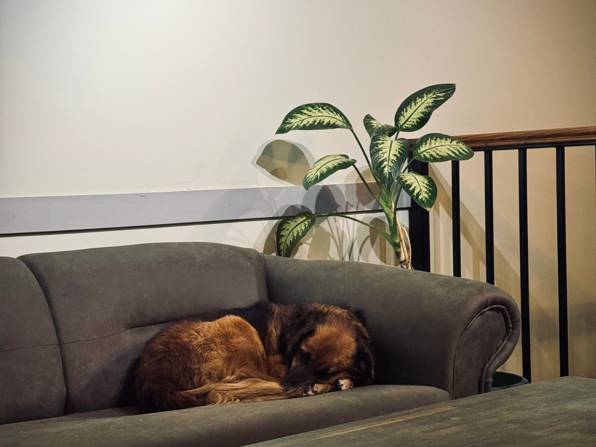
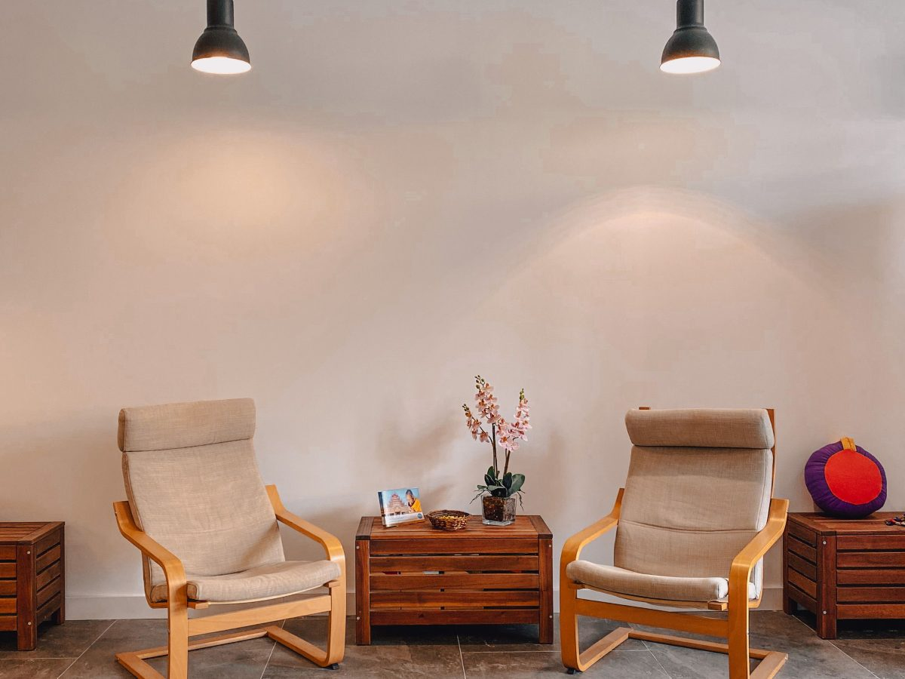
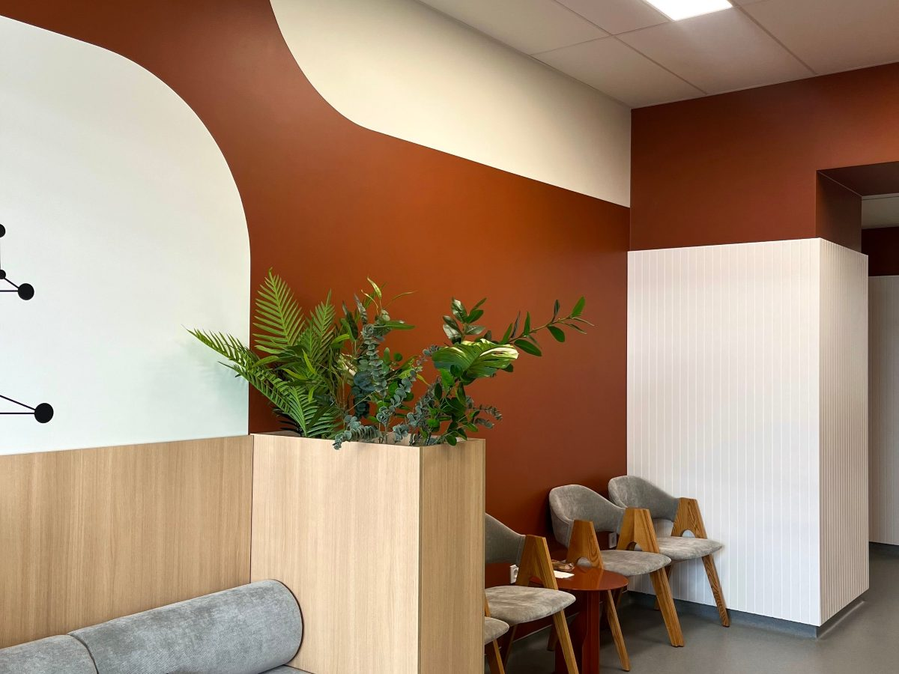
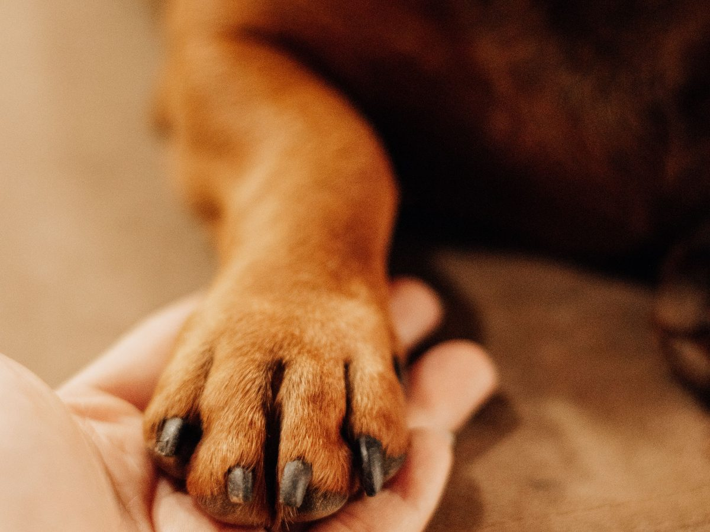
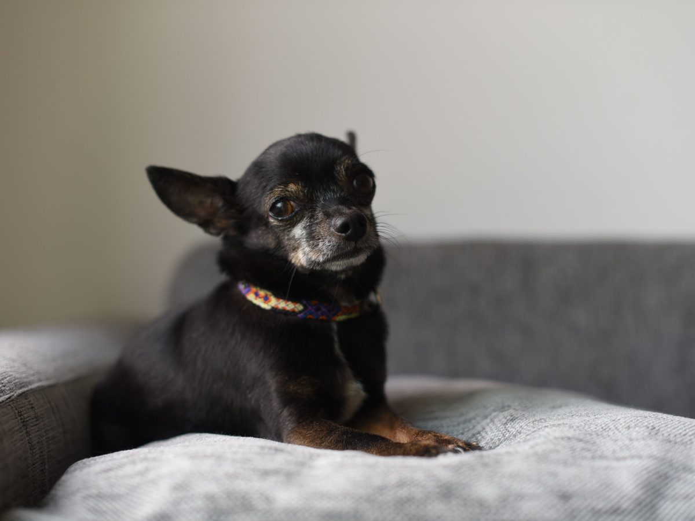
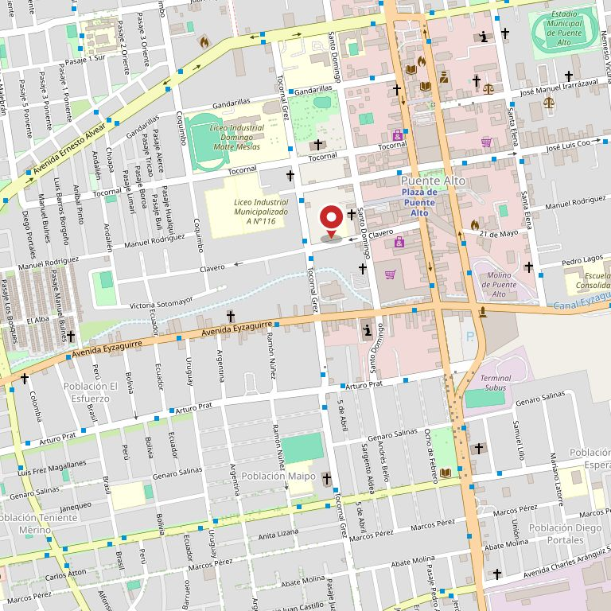

Etapa 1
Adulto
Desde el año hasta los ___ años
- Peso y condición corporal
- Dientes y encías
- Piel, pelaje y oídos
- Vacunas y desparasitación al día
1 vez al año
Puente Alto · Clavero 169
Un perro o un gato que entra en años no necesita más visitas: necesita otras preguntas en la visita. Acá está cuáles son, cada cuánto conviene y qué se revisa en cada una.
500+ reseñas en Google · atienden de lunes a sábado
La pregunta que se hace tarde
Al cachorro se le lleva la cuenta: vacunas, desparasitación, esterilización. Después el calendario se vacía y pasan tres años sin una consulta. Esta tabla es un recordatorio, no una consulta: dice qué se mira en cada etapa y cada cuánto, para que la hora se pida antes de que haya un motivo.
Etapa 1
Desde el año hasta los ___ años
1 vez al año
Etapa 2
Desde los ___ años
cada 6 meses
Etapa 3
Desde los ___ años
cada 4 a 6 meses
Esto no reemplaza una consulta y no es un diagnóstico. Acá no van dosis, ni nombres de remedios, ni «qué puede tener»: eso lo dice el veterinario con el animal adelante. Las edades y los intervalos dependen del tamaño y de la especie —un gato y un gran danés no envejecen igual— y por eso están marcados: los completa la clínica.

Si hace más de un año que no viene a control, ése es el motivo suficiente.
Agendar el control por WhatsAppLo que hacen
Estos siete están publicados hoy en su propia ficha de reservas, con su nombre y su dirección. No los inventamos nosotros.
La visita de siempre: se mira, se pesa, se pregunta y se explica.
El calendario del cachorro y los refuerzos del adulto.
Interna y externa, que en verano es la mitad de las consultas.
Pabellón propio, con la preparación y el control de después.
Para el que no se puede ir a la casa todavía.
Piel, alergias y esa picazón que vuelve todos los años.
Cuando llega el día, también lo acompañan acá. Se nombra porque es un servicio real y porque nadie quiere buscarlo con apuro.
Sin alarmismo
No todo lo que asusta es urgente, y no todo lo que parece leve puede esperar tres semanas. Estas señales no piden correr: piden adelantar la hora y llamar el mismo día.
La clínica atiende de lunes a viernes de 9:30 a 18:00 y sábado de 10:00 a 17:00. No es una clínica de 24 horas y esta página no dice que lo sea. Si algo pasa fuera de ese horario, deje el mensaje por WhatsApp y lo atienden ___.

Quién atiende
Quien lleva a su perro o a su gato a la misma clínica desde hace años ya sabe a quién busca cuando llama. El que llega por primera vez, no. Esa es la parte que una ficha de reservas no muestra y que una página propia sí.
Nombre · en qué se especializa · desde cuándo
Nombre · en qué se especializa · desde cuándo
Nombre · en qué se especializa · desde cuándo
No inventamos nombres ni ponemos retratos de banco de fotos: los huecos quedan marcados para que se vea qué falta.
«Quinientas personas se tomaron el trabajo
de escribir cómo los atendieron.
Y no hay ni una página donde eso se lea.»
La dirección
La dirección y el horario salen de su propia ficha pública de reservas, que es —hoy por hoy— el único lugar de internet donde la clínica habla por sí misma.





Estas fotos son de bancos de uso libre y no son de Clavero Vet. Están para que se vea de qué habla la página. Las de verdad las tienen ellos, y quince publicaciones de Instagram no alcanzan a mostrarlas.
Contacto
Dirección
Clavero 169
Puente Alto
Existe y es de ellos. Con quince publicaciones, es un cartel, no una vitrina.
Correo
___@___

Para el dueño de la clínica
claverovet.cl y clavero.vet no existen: no están registrados. Lo único propio que publican es la ficha de AgendaPro, que trae la dirección, el horario y los siete servicios, y un Instagram de 1.961 seguidores con quince publicaciones.
Esa ficha funciona y conviene dejarla: ahí están las horas de verdad. El problema es dónde vive: en un buscador donde aparece junto a las demás veterinarias de Puente Alto, ordenadas por lo que decida el buscador, no por quince años de trabajo.
Su ficha de reservas dice Clavero 169 y Google registra Clavero 163. Son seis metros de diferencia y no importa a pie, pero sí importa cuando alguien llega en auto de noche buscando el número. Vale la pena dejar uno solo escrito en todas partes.
Y ojo con el nombre: en la misma calle hay una Veterinaria Municipal en el 330. Quien busca «veterinaria Clavero» puede llegar a la otra. Un dominio propio con su nombre separa las dos cosas de una vez.
Demo hecha por CristalWeb · La información viene de su ficha pública de reservas, de su Instagram y de Google, comprobada el 11-09-2026. La nota promedio no se muestra a propósito: lo que vale acá es el volumen. Lo marcado con línea de puntos son huecos a completar, no datos inventados. Sin precios y sin dosis: eso lo pone la clínica.